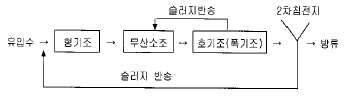
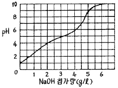

수질환경기사 (2004-05-23 기출문제)
1과목: 수질오염개론
1. 다음 Colloid 중에서 소량의 전해질에서도 쉽게 응집이 일어나는 것으로 주로 무기물질의 Colloid인 것은?
- 서스펜션 Colloid
- 에멀션 Colloid
- 친수성 Colloid
- 소수성 Colloid
(정답률: 40%)

2. 일반적으로 처리조 설계에 있어서 수리모형으로 plug flow형과 완전혼합형이 있다. 다음의 혼합정도를 나타내는 표시항중 이상적인 plug flow형 일 때 얻어지는 값으로 알맞는 것은?
- 분산수 : ∞
- 통계학적 분산 : 1
- Morrill지수 : 1보다 크다.
- 지체시간 : t(이론적 체류시간)
(정답률: 알수없음)
3. Glucose 300㎎/L가 완전 산화하는데 필요한 이론적 산소요구량은?
- 310㎎/L
- 320㎎/L
- 330㎎/L
- 340㎎/L
(정답률: 91%)
4. 적조(red tide)에 관한 설명으로 알맞지 않은 것은?
- 여름철, 갈수기로 인한 염도가 증가된 정체된 해역에서 주로 발생된다.
- 고밀도로 존재하는 적조생물의 호흡에 의해 수중 용존산소를 소비하여 수중의 다른 생물의 생존이 어렵다.
- upwelling현상이 원인이 되는 경우가 있다.
- 적조생물중 독성을 갖는 편모조류가 치사성의 독소를 분비, 어패류를 폐사시킨다.
(정답률: 84%)
5. 다음의 각종 용액중 몰(mole) 농도가 가장 큰 것은? (단, Na, Cl의 원자량은 각각 23, 35.5이다.)
- 130g 수산화나트륨/4ℓ
- 5.4g 황산/30㎖
- 0.4kg 염화나트륨/10ℓ
- 5.2g 염산/0.1ℓ
(정답률: 알수없음)
6. 알칼리도에 관한 다음 반응중 가장 부적절한 것은?
- CO2 + H2O ⇄ H2CO3 ⇄ HCO3-2 + H+
- HCO3- ⇄ CO3-2 + H+
- CO3-2+ H2O ⇄ HCO3- + OH-
- HCO3-+ H2O ⇄ H2CO3+ OH-
(정답률: 82%)
7. 물질대사중 '동화작용'을 가장 알맞게 나타낸 것은?
- 잔여영양분+ATP → 세포물질+ADP+무기인+배설물
- 잔여영양분+ADP+무기인 → 세포물질+ATP+배설물
- 세포내 영양분의 일부+ATP → ADP+무기인+배설물
- 세포내 영양분의 일부+ADP+무기인 → ATP+배설물
(정답률: 46%)
8. 산화-환원에 대한 설명으로 알맞지 않는 것은?
- 산화는 전자를 받아들이는 현상을 말하며, 환원은 전자를 잃는 현상을 말한다.
- 이온 원자가나 공유원자가에 (+)나(-)부호를 붙인 것을 산화수라 한다.
- 산화는 산화수의 증가를 말하며, 환원은 산화수의 감소를 말한다.
- 산화는 수소화합물에서 수소를 잃는 현상이며 환원은 수소와 화합하는 현상을 말한다
(정답률: 알수없음)
9. 석회수용액(Ca(OH)2) 100mL를 중화시키는데 0.02N HCl 32mL이 소요되었다면 이 석회수용액의 경도는? (단, 단위: CaCO3 mg/L )
- 320
- 420
- 540
- 640
(정답률: 알수없음)
10. 어떤 단순반응에 대하여 온도에 따른 비속도상수(specific rate constant)의 변화를 나타내는 Arrhenius식으로 알맞는 것은? (단, k: 비속도상수, E: 활성화에너지, R: 기체상수 T: 절대온도)
- d(ln k)/dt = E/RT2
- d(ln k)/dt = RT2/E
- d(ln k)/dt = E2/RT
- d(ln k)/dt = RT/E2
(정답률: 16%)
11. 하천의 자정단계와 오염의 정도를 파악하는 Whipple의 자정단계에 대한 설명이다. 틀린 것은?
- 분해지대는 희석이 잘되는 대하(大河)보다 희석이 덜되는 작은 하천에서 더 뚜렷이 나타난다.
- 분해지대에서는 세균의 수가 증가하고 유기물을 많이 함유하는 슬러지의 침전이 많아진다.
- 활발한 분해지대에서는 흑색 및 점성질의 슬러지 침전물이 생기고 기체방울이 수면으로 떠 오른다.
- 활발한 분해지대에서는 오염에 잘 견디는 곰팡이류가 녹색 수중식물이나 고등미생물을 대신해서 번식한다.
(정답률: 64%)
12. 하천모델의 종류중 'DO SAG-Ⅰ,Ⅱ,Ⅲ'에 관한 설명으로 틀린 것은?
- 1차원 정상상태 모델이다.
- 점오염원 및 비점오염원이 하천의 용존산소에 미치는 영향을 나타낼 수 있다.
- Streeter-Phelps식을 기본으로 한다.
- 저질의 영향과 광합성 작용에 의한 용존산소반응을 나타낸다.
(정답률: 39%)
13. 효모(Yeast)에 관한 설명으로 틀린 것은?
- 비사상성 곰팡이이다.
- 넓은 범위의 온도 및 pH에 적응 하기 때문에 자연수 계에서 높은 농도로 발견된다.
- 다세포이며 유성생식인 출아에 의해 번식한다.
- 포자를 만들지 않는 효모는 불완전균류에 속한다.
(정답률: 알수없음)
14. 직경 4mm인 모세관의 표면장력은 0.0037kgf/m이라면 물기둥의 상승높이는? (단, 접촉각 β = 5˚ )
- 0.368cm
- 0.468cm
- 0.568cm
- 0.668cm
(정답률: 77%)
15. 최종 BOD가 10mg/L, DO가 5mg/L인 하천의 상류지점으로 부터 6일 유하거리의 하류지점에서의 DO농도(mg/L)는? (단, 온도변화없으며 DO포화농도는 9mg/L이고 탈산소계수는 0.1/day, 재폭기계수는 0.2/day 이다)
- 6.13
- 6.38
- 6.87
- 6.93
(정답률: 37%)
16. 약산인 0.01N-CH3COOH 가 3% 해리되어 있다면, 이 수용액의 pH는?
- 3.2
- 3.5
- 4.3
- 4.6
(정답률: 91%)
17. Na+=92mg/ℓ , Ca2+=80mg/ℓ , Mg2+=96mg/ℓ 인 농업용수의 SAR치는? (단, 원자량 Na: 23, Ca:40, Mg:24 )
- 약 1.6
- 약 2.1
- 약 3.4
- 약 5.3
(정답률: 50%)
18. 미생물중 세균(Bacteria)에 관한 특징과 가장 거리가 먼 것은?
- 원시적 엽록소를 이용하여 부분적인 탄소동화작용을 한다.
- 용해된 유기물을 섭취하며 주로 세포분열로 번식한다
- 수분 80%, 고형물 20% 정도로 세포가 구성되며 고형물중 유기물이 90%를 차지한다.
- 환경인자(pH, 온도)에 대하여 민감하며 열보다 낮은 온도에서 저항성이 높다.
(정답률: 82%)
19. 박테리아를 분류함에 있어 성장을 위한 환경적인 조건에 따라 분류하기도 하는데, 다음 중 바닷물과 비슷한 염조건하에서 가장 잘 자라는 박테리아(호염균)는?
- Hyperthermophiles
- Microaerophiles
- Halophiles
- Chemotrophs
(정답률: 알수없음)
20. PbSO4의 용해도는 물 1L당 0.038g이 녹는다. PbSO4의 용해도적(Ksp)는? (단, PbSO4 분자량: 303g)
- 1.6×10-8
- 1.6×10-4
- 1.8×10-8
- 1.8×10-4
(정답률: 알수없음)
2과목: 상하수도계획
21. 다음의 용어에 대한 설명으로 알맞지 않는 것은?
- 서어징:수압관로중의 유수량의 급격한 변동으로 조압수조내에 생기는 수위의 파동적 변화
- 풋밸브(foot valve):유출관 하단에 붙어있는 밸브로 펌프 또는 우물의 과량 유출을 방지
- 역사이폰:하천,우물,철도,도로등 횡단장소에서 관로를 부분적으로 낮추어 땅속으로 지나가게 부설한 것
- 제수밸브:통수량을 가감하거나 통수의 개폐를 위하여 관로에 설치하는 것
(정답률: 알수없음)
22. 펌프의 토출량 24m3/min,총양정 400㎝,회전속도 1200rpm인 펌프의 비교회전도(회/분)는?
- 1078
- 1521
- 2078
- 2121
(정답률: 알수없음)
23. 계획오수량 산정시, 우리나라 하수도 시설기준상 하수거에 유입되는 지하수량은 1인 1일 최대 오수량의 몇 % 범위로 정하고 있는가?
- 5~8%
- 7~10%
- 10~15%
- 10~20%
(정답률: 67%)
24. 펌프의 토출량이 1,200m3/hr, 흡입구의 유속이 2.0m/sec일 경우 펌프의 흡입구경은?
- 33.1 ㎝
- 46.2 ㎝
- 52.4 ㎝
- 62.8 ㎝
(정답률: 알수없음)
25. 다음은 하수관거의 특성에 대한 설명 중 틀린 것은?
- 관거내면이 매끈하고 조도계수가 클 것.
- 중량이 작고, 운반 및 설치공사에 지장이 생기지 않을 것.
- 외압에 대한 강도가 충분하고 파괴에 대한 저항력이클 것.
- 유량의 변동에 대해서 유속의 변동이 적은 수리특성을 가질 것
(정답률: 알수없음)
26. 지름이 600mm인 하수관을 매설코자 한다. 매설지점의 표토는 밀도가 1.8t/m3의 진흙이었으며, 1=1.38 이었다. 흙에 의해 매설 관이 받는 단위 길이당 하중(t/m)을 마스턴(Marston)의 방법에 따라 계산하면 얼마가 되겠는가?
- 2.56
- 3.58
- 4.69
- 5.96
(정답률: 알수없음)
27. 취수탑 설치 위치는 갈수기에도 최소 수심이 얼마 이상이어야 하는가?
- 1m
- 2m
- 3m
- 3.5m
(정답률: 67%)
28. 상수처리시설 중 침사지에 관한 설명으로 틀린 것은?
- 장방형으로 하며 길이가 폭의 3~8배가 되게 한다.
- 침사지의 용량은 침사지내의 고수위까지의 유량으로 계획취수량을 10~20분간 저류할 수 있어야 한다.
- 침사지내에서의 유속은 2~7cm/sec가 되도록 한다.
- 침사지 바닥경사는 1/20 이상의 경사를 두어야 한다.
(정답률: 50%)
29. 확장이 어렵고 소요비용이 막대한 큰댐이나 대구경 관로의 설계 계획기간은 어느 정도가 가장 알맞은가?
- 25 ∼ 50년
- 20 ∼ 25년
- 15 ∼ 20년
- 10 ∼ 15년
(정답률: 17%)
30. 상수처리를 위한 약품침전지의 구성과 구조에서 맞지 않는 것은?
- 슬러지의 퇴적심도로서 30cm 이상을 고려한다.
- 유효수심은 3∼5.5m로 한다.
- 지저에는 슬러지 배제에 편리하도록 배출수구를 향하여 경사지게 하여야 한다.
- 고수위에서 침전지 벽체 상단까지의 여유고는 60cm 정도로 하여야 한다.
(정답률: 24%)
31. 취수탑의 취수구를 만들때 적합하지 않은 항목은?
- 취수구의 형태는 장방형 또는 원형으로 한다.
- 취수구의 전면에 스크린을 설치하여야 한다.
- 취수구에는 탑체 내측이나 외측에 슬루스 게이트, 버터플라이 밸브 등의 제수밸브를 설치하여야 한다
- 취수구의 단면적은 하천의 경우 유입속도가 5∼10cm/초 정도가 되도록 한다.
(정답률: 50%)
32. 하수관거의 유속과 경사는 하류로 갈수록 어떻게 되도록 설계하여야 하는가?
- 유속 : 증가, 경사 : 감소
- 유속 : 증가, 경사 : 증가
- 유속 : 감소, 경사 : 증가
- 유속 : 감소, 경사 : 감소
(정답률: 59%)
33. 오수관거의 유속 범위로 알맞는 것은? (단, 계획시간최대 오수량 기준)
- 최소 0.2m/sec, 최대 2.0m/sec
- 최소 0.3m/sec, 최대 2.0m/sec
- 최소 0.6m/sec, 최대 3.0m/sec
- 최소 0.8m/sec, 최대 3.0m/sec
(정답률: 94%)
34. 하수처리시설의 이차침전지 유출설비 중 월류위어의 부하율(m3/m-day)로 가장 적절한 것은?
- 60
- 120
- 190
- 250
(정답률: 알수없음)
35. 상수펌프 설비중 흡입관에 관한 설명으로 틀린 것은?
- 흡입관은 각 펌프마다 설치하여야 한다
- 수평으로 설치하는 것을 피하여야 한다
- 유량은 1.5m3/초 이하로 하는 것이 경제적이다
- 흡입관과 흡수정 벽체 사이의 거리는 관경의 1.5배이상 두어야 한다
(정답률: 알수없음)
36. 상수의 공급과정을 바르게 나타낸 것은?
- 취수 → 도수 → 정수 → 송수 → 배수 → 급수
- 취수 → 도수 → 송수 → 정수 → 배수 → 급수
- 취수 → 송수 → 정수 → 배수 → 도수 → 급수
- 취수 → 송수 → 배수 → 정수 → 도수 → 급수
(정답률: 50%)
37. 계획 우수량산정에 관한 다음 내용중 틀린 것은?
- 확률년수는 원칙적으로 5~10년으로 한다.
- 유입시간은 유달시간과 유하시간을 합한 것이다.
- 유출계수는 토지이용도별 기초유출계수로부터 총괄유출계수를 구하는 것을 원칙으로 한다.
- 최대계획우수유출량의 산정은 합리식에 의하는 것으로 한다.
(정답률: 알수없음)
38. 상하수도 계획을 위한 인구추정시, 신빙도에 관한 설명으로 알맞는 것은?
- 추정년도가 적을수록, 인구가 감소되는 경우가 적을수록, 인구증가율이 감소될수록 적어진다.
- 추정년도가 적을수록, 인구가 감소되는 경우가 흔할수록, 인구증가율이 증가될수록 적어진다.
- 추정년도가 커질수록, 인구가 감소되는 경우가 적을수록, 인구증가율이 감소될수록 적어진다.
- 추정년도가 커질수록, 인구가 감소되는 경우가 흔할수록, 인구증가율이 증가될수록 적어진다.
(정답률: 30%)
39. 상수처리를 위한 고속응집 침전지를 채택할 때는 다음 조건을 고려하여 결정하여야 하는데, 맞지 않는 것은?
- 원수의 탁도는 10도 정도가 바람직하다.
- 최고 탁도는 1000도 이하인 것이 바람직하다.
- 용량은 계획정수량의 1.5∼2.0 시간분으로 한다.
- 지내의 평균 상승 유속은 10∼20mm/분을 표준으로 한다.
(정답률: 8%)
40. 펌프의 수격작용을 방지하기 위한 방법이라 볼 수 없는 것은 ?
- 펌프에 fly wheel을 붙인다.
- 토출측 관로에 에어챔버를 설치한다.
- 토출관측에 양방향 수조(two-way tank)를 설치한다.
- 펌프 토출측에 완폐체크밸브를 설치한다.
(정답률: 42%)
3과목: 수질오염방지기술
41. 회전생물막접촉기(RBC)에 관한 내용과 가장 거리가 먼 것은?
- RBC로의 유입수는 스크린시설을 거쳐야 하며 내부 재순환으로 적정수질을 맞추어야 한다.
- RBC시스템 모델링의 복잡성 때문에 경험적 설계기준이 발달되었다.
- RBC조의 메디아는 전형적으로 약 40%가 물에 잠긴다.
- RBC시스템은 활성슬러지 시스템에서 필요한 에너지의 1/3~1/2의 에너지가 필요하다.
(정답률: 알수없음)
42. 폐수 유량의 첨두인자(peaking factor)에 대하여 정확하게 나타낸 식은?
- 첨두유량과 최소유량의 비
- 첨두유량과 평균유량의 비
- 첨두유량과 최대유량의 비
- 첨두유량과 첨두유량의 1/3과의 비
(정답률: 44%)
43. 1000m3의 폐수중에서 SS농도가 210㎎/ℓ일 때 처리효율 70%인 처리장에서 발생하는 슬러지의 양은? (단, 처리된 SS량과 발생슬러지량은 같다고 가정함슬러지 비중: 1.03, 함수율 94% )
- 2.12 m3
- 2.38 m3
- 2.52 m3
- 2.73 m3
(정답률: 60%)
44. 다음 특성을 갖는 공장폐수를 활성슬러지 법으로 처리할때 포기조내 MLSS 농도를 일정하게 유지하기 위해 반송비는? (단, 유입원수의 SS는 400mg/ℓ ,포기조내 MLSS는 3000mg/ℓ , 반송슬러지 농도는 10,000mg/ℓ 이며 유입 원수의 SS는 고려하며 포기조내에서 슬러지의 생성 및 방류수중의 SS는 고려하지 않음)
- 37%
- 42%
- 48%
- 52%
(정답률: 알수없음)
45. 폐수로 부터 암모니아를 처리하는 방법중 air stripping이 있다. 이 방법은 다음 식에 의해 이루어진다 [ NH3+H2O ⇄ NH4++OH- ]25℃, pH 10 일때의 NH3의 분율은? (단, 25℃ 에서의 평형상수 K=1.8× 10-5이다.)
- 약 80 %
- 약 85 %
- 약 90 %
- 약 95 %
(정답률: 알수없음)
46. 생물막공법의 특성이라 볼 수 없는 것은 ?
- 슬러지 보유량이 크고 생물상이 다양하다.
- 슬러지 발생량이 비교적 많다.
- 생물막 각 단계별 우점종이 다르다.
- 수질, 수량변동이 강하여 저온처리 효율이 좋다.
(정답률: 알수없음)
47. 용수의 소독에 사용할 수 있는 소독제에 관한 설명으로 가장 거리가 먼 것은?
- 이산화염소의 소독력은 강하나 페놀류화합물 처리시에는 맛과 냄새를 유발로 사용을 제한한다.
- 요오드를 소독제로 사용하는데 주된 제한 이유는 고가의 비용이다.
- 태양광중의 파장이 커질수록(길어질수록) 살균효과는 감소한다.
- 물을 멸균하기 위한 은의 투여량은 1㎍ - 0.5mg/L 정도로 알려져 있다.
(정답률: 알수없음)
48. 아래의 공정은 생물학적 질소, 인제거의 대표적 공정인 A2/O 공정을 나타낸 것이다. 각 반응조의 기능에 대하여 가장 적절하게 설명한 것은?

- 혐기조:인방출,무산소조:탈질,폭기조:질산화
- 혐기조:인방출,무산소조:질산화,폭기조:탈질
- 혐기조:인과잉섭취,무산소조:탈질,폭기조:질산화
- 혐기조:인과잉섭취,무산소조:질산화,폭기조:인방출
(정답률: 알수없음)
49. 200mg/L의 에탄올(C2H5OH)만을 함유하는 2000m3/day의 공장폐수를 재래식활성슬러지 공법으로 처리하는 경우에 이론적으로 첨가되어야 하는 질소의 량(kg/day)? (단, BOD:N=100:5)
- 약 24
- 약 31
- 약 42
- 약 51
(정답률: 50%)
50. 활성슬러지공법에서 하수처리장으로 부터의 MLSS가 2500mg/L, 포기조 부피가 2000m3, 포기조 혼합액 1ℓ 의 30분간에 걸친 침전슬러지부피는 250mL, 1차 침전지 유출수의BOD=150mg/L, 1차 침전지 유출수의 SS=100 mg/L, 유량=8000m3/day일 때 SVI 값은?
- 75
- 100
- 125
- 150
(정답률: 0%)
51. 슬러지의 소화율(消化率)이란 생슬러지중의 VSS가 가스화및 액화되는 비율을 말한다. 생슬러지와 소화슬러지의 VSS/SS가 각각 67％ 및 50％일 경우 소화율은?
- 48％
- 51％
- 64％
- 72％
(정답률: 알수없음)
52. NO3- 10mg/L가 탈질균에 의해 질소가스화 될 때 소요되는 이론적 메탄올의 양(mg/L)은? (단, 메탄올:CH3OH, 기타 유기탄소원 고려 않함 )
- 3.5
- 4.3
- 5.7
- 6.9
(정답률: 24%)
53. 다음의 사항중 생물학적 질산화, 탈질미생물에 관하여 적절하게 설명한 것은 ?
- 질산화 미생물은 종속영양미생물(Heterotrophic Bac)이고 탈질미생물은 자가영양미생물(Autotrophic Bac)이다.
- 질산화 미생물, 탈질미생물 모두 종속영양미생물(Heterotrophic Bac) 이다.
- 질산화 미생물은 자가영양미생물(Autotrophic Bac) 이고 탈질 미생물은 종속영양미생물(HeterotrophicBac)이다.
- 질산화미생물, 탈질미생물 모두 자가영양미생물(Autotrophic Bac)이다.
(정답률: 알수없음)
54. 역삼투장치로 하루에 800,000ℓ 의 3차처리된 유출수를 탈염하고자 한다. 이에 대한 자료는 다음과 같다면 -. 25℃에서 물질전달계수 = 0.2068ℓ /(day-m2)(kPa), -. 유입수와 유출수의 압력차 = 2400 kPa, -. 유입수와 유출수의 삼투압차 =310 kPa, -. 최저운전온도 = 10℃, A10=1.58A25℃ 요구되는 막 면적을 구하면?
- 2924m2
- 2778m2
- 2680m2
- 2552m2
(정답률: 알수없음)
55. 수면부하율(또는 표면부하율)이 50m3/m2-d인 침전지에서 100% 제거될수 있는 입자의 직경은 얼마 이상 부터인가? (단, 폐수와 입자의 비중은 각각 1.0과 1.35이며 폐수의 점성계수는 0.098kg/m.s 이고 입자의 침전은 stokes공식을 따른다.)
- 0.28mm이상
- 0.55mm이상
- 0.63mm이상
- 0.82mm이상
(정답률: 알수없음)
56. 침전하는 입자들이 너무 가까이 있어서 입자간의 힘이 이웃입자의 침전을 방해하게 되고 동일한 속도로 침전하며 활성슬러지공법의 최종침전조 중간 깊이에서 일어나는 침전은 ?
- Ⅰ형침전(독립침전)
- Ⅱ형침전(응집침전)
- Ⅲ형침전(지역침전)
- Ⅳ형침전(압축침전)
(정답률: 알수없음)
57. SBR의 장점과 가장 거리가 먼 것은?
- BOD 부하의 변화폭이 큰 경우에 잘 견딘다.
- 처리용량이 큰 처리장에 적용이 용이하다.
- 슬러지 반송을 위한 펌프가 필요 없어 배관과 동력이 절감된다.
- 질소와 인의 효율적인 제거가 가능하다.
(정답률: 50%)
58. 정수장 침전지내에 발생할 가능성이 있는 단락류의 기본적 형태와 가장 거리가 먼 것은?
- 설계가 부적절하게 이루어짐으로 인하여 생기는 단락류
- 다량의 플록이 여과지로 누출될 때 현저하게 나타나는 만성적 단락류
- 다량의 슬러지 블랑캣트의 침전불량으로 인한 단락류
- 일반 침전지 내에 생기는 밀도류에 의한 단락류
(정답률: 알수없음)
59. 유량이 6,750m3/d, 부유물질농도(SS)가 55㎎/ℓ 인 폐수에 황산제이철(Fe2(SO4)3) 100㎎/ℓ 를 응집제로 주입한다. 이 물에 알칼리도가 없는 경우 매일 첨가해야 하는 석회의 양은? (단, 원자량 Fe = 55.8, Ca = 40 )
- 315kg/d
- 346kg/d
- 375kg/d
- 386kg/d
(정답률: 알수없음)
60. 부상조의 최적 A/S비는 0.04, 처리할 폐수의 부유물질 농도는 250mg/L, 20℃에서 414KPa로 가압할 때 반송율(%)은? (단 20℃에서 f=0.8, 공기용해도 Sa=18.7㎖/ℓ , 순환방식기준)
- 약 7
- 약 14
- 약 21
- 약 28
(정답률: 알수없음)
4과목: 수질오염공정시험기준
61. 원자 흡광분석에서 일어나는 간섭에 관한 내용으로 거리가 가장 먼 것은 ?
- 불꽃 중에서 원자가 완전히 이온화 되지 않아 흡광 능력의 저하
- 시료용액의 점도가 높아지면 분무능률이 저하하며 흡광의 강도가 저하
- 공존물질과 작용하여 해리하기 어려운 화합물이 생성되어 흡광에 관계되는 바닥상태의 원자수가 감소
- 분석에 사용되는 스펙트럼선이 다른 인접선과 완전히 분리되지 않음
(정답률: 알수없음)
62. 0.1㎎N/㎖ 농도의 NH3-N 표준원액을 1L 조제하고자 할 때 요구되는 NH4Cl의 양은? (단, NH4Cl의 M.W = 53.5)
- 314.70 ㎎/L
- 382.14 ㎎/L
- 464.14 ㎎/L
- 492.14 ㎎/L
(정답률: 알수없음)
63. 하수중 불소측정에 관한 설명으로서 옳지 못한 것은?
- 란탄-알리자린 콤프렉손법과 이온전극법으로 측정할 수 있다.
- 흡광광도법의 경우 증류에 의해 알루미늄 및 철의 방해를 억제할 수 있다.
- 이온전극법의 경우 이온강도 완충액을 이용하여 pH를 6.0~7.5로 조절한 후 측정한다.
- 이온전극법에 의한 정량범위는 0.1~100mgF-/L 이다.
(정답률: 9%)
64. 유도결합 플라스마 발광광도 분석장치의 구성으로 알맞는 것은?
- 시료도입부 - 시료원자화부 - 분광부 - 단색화부 - 연산처리부
- 시료도입부 - 파장선택부 - 단색화부 - 분광부 - 연산처리부
- 시료도입부 - 단색화부 - 시료원자화부 - 분광부 - 연산처리부
- 시료도입부 - 고주파전원부 - 광원부 - 분광부 - 연산처리부
(정답률: 알수없음)
65. 배출허용기준 적합여부를 판정을 위해 자동 시료채취기로 시료를 채취하는 방법의 기준으로 알맞는 것은?
- 6시간 이내에 30분이상 간격으로 2회이상 채취하여 일정량의 단일 시료로 한다.
- 6시간 이내에 1시간이상 간격으로 2회이상 채취하여 일정량의 단일 시료로 한다.
- 8시간 이내에 1시간이상 간격으로 2회이상 채취하여 일정량의 단일 시료로 한다.
- 8시간 이내에 2시간이상 간격으로 2회이상 채취하여 일정량의 단일 시료로 한다.
(정답률: 알수없음)
66. 투과율법을 이용한 색도 측정에 관한 내용으로 알맞지 않은 것은?
- 시각적으로 눈에 보이는 색상에 관계없이 단순색도차 또는 단일 색도차를 계산하는데 아담스-니컬슨의 색도공식을 근거로 한다.
- 백금 - 코발트 표준물질과 아주 다른 색상의 폐수·하수에는 적용하기 어렵다.
- 백금 - 코발트 표준물질과 비슷한 색상의 폐수· 하수에 적용할 수 있다.
- 시료중에 부유물질은 제거 하여야 한다.
(정답률: 알수없음)
67. 어떤 산성 폐수를 중화하기 위해 이 폐수 소량을 NaOH로 적정 실험한 결과 다음과 같은 중화적정곡선을 얻었다. 이 폐수 500m3/d를 pH 6으로 조정하기 위해 소요되는 NaOH량(㎏/d)은?

- 약 2,000㎏/d
- 약 1,500㎏/d
- 약 1,000㎏/d
- 약 500㎏/d
(정답률: 알수없음)
68. 시료채취시 유의사항에 관한 내용과 거리가 먼 것은?
- 유류 또는 부유물질 등이 함유된 시료는 침전물이 부상하여 혼입되어서는 안된다.
- 환원성 물질, 수소이온, 유류를 측정하기 위한 시료는 시료용기에 가득 채워야 한다.
- 시료채취량은 시험항목등에 따라 차이는 있으나 보통 3 ~ 5L 정도 이어야 한다.
- 지하수 시료는 취수정내에 고여 있는 물의 교란을 최소화 하면서 채취하여야 한다.
(정답률: 10%)
69. 수질오염물질의 농도표시 방법에 대한 설명으로 적절치 않는 것은?
- 백만분율을 표시할 때는 ppm 또는 ㎎/ℓ 의 기호를 쓴다.
- 십억분율을 표시할 때는 ㎍/ℓ 또는 ppb의 기호를 쓴다.
- 용액의 농도를 '%'로만 표시할 때는 W/V%를 말한다.
- 액체의 농도는 표준상태(0℃, 1기압, 비교습도 0%)로 환산 표시한다.
(정답률: 알수없음)
70. 알칼리성에서 디에틸디티오카르바민산나트륨과 반응하여 생성하는 황갈색의 킬레이트화합물을 초산부틸로 추출하여 흡광도 440nm에서 측정하는 물질은? (단, 흡광광도법 기준)
- 페놀류
- 불소
- 구리
- 시안
(정답률: 60%)
71. 가스크로마토그래법을 이용한 휘발성 저급 염소화 탄화수소류 측정정량에 관한 내용중 알맞지 않은 것은?
- 트리클로로에틸렌, 테트라클로로에틸렌을 헥산으로 추출한다.
- 전자포획형 검출기를 사용한다.
- 운반가스는 99.999 V/V% 이상의 질소로 유량은 40-80mL/min이다.
- 컬럼은 석영제로 내경 5㎜, 길이 400㎜이하의 것을 사용한다.
(정답률: 알수없음)
72. [ 시료중 질소화합물을 ( )의 존재하에 120℃에서 유기 물과 함께 분해하여 질산이온으로 산화시킨다] 총질소 측정시험에 관한 설명이다. ( )안에 알맞는 시약명은? (단, 흡광광도법 기준)
- 알칼리성 과황산칼륨
- 과염소산나트륨
- 염화암모늄-암모니아용액
- 염화제일주석산
(정답률: 0%)
73. 대장균군의 정성시험이 아닌 것은?
- 배양시험
- 추정시험
- 확정시험
- 완전시험
(정답률: 알수없음)
74. 중크롬산칼륨에 의한 화학적 산소요구량(COD)측정법에 관한 설명중 틀린 것은?
- 시료량은 2시간 동안 끓인 다음 최초의 넣은 0.025N-중크롬산 용액의 약 1/3이 남도록 취한다.
- 염소이온의 양이 40mg이상 공존할 경우에는 HgSO4 : Cl-=10:1의 비율로 황산제이수은의 첨가량을 늘인다.
- 0.025N 황산제일철암모늄 액을 사용하여 적정한다.
- 적정시 액의 색이 청록색에서 적갈색으로 변할 때 까지 적정한다.
(정답률: 34%)
75. 아연 시험법중 흡광광도법에서 사용하는 시약인 아스코르빈산 나트륨은 어떤 이온이 공존하는 경우에 검수에 넣어주는가?
- Cr2+
- Fe2+
- Mn2+
- Cd2+
(정답률: 알수없음)
76. 유기물이 많은 공장폐수를 전처리하여 분해할 때 첨가되는 것으로 과염소산과 같이 공존하면 폭발현상을 감소시키는 것은?
- 염산
- 질산
- 인산
- 황산
(정답률: 알수없음)
77. 이온전극법으로 NH4+ , NO2- ,CN- 이온을 측정하고자 한다. 가장 적당한 이온전극은?
- 유리막 전극
- 유막형 전극
- 액체막 전극
- 격막형 전극
(정답률: 알수없음)
78. 원자흡광광도장치의 광원램프의 점등장치로서 갗추어야할 구비조건과 거리가 먼 것은?
- 램프의 수에 따라 필요한 만큼의 예비점등 회로를 갖는 것이어야 한다.
- 전원회로는 전류 또는 전압이 일정한 것이어야 한다.
- 램프의 전류값을 정밀하게 조정할 수 있는 것이어야 한다.
- 고주파 방전에 의한 램프의 출력 변화가 적어야 한다.
(정답률: 55%)
79. 데발다 합금 환원 증류법으로 질산성 질소를 측정하는 원리를 설명한 것이다. 이중 틀린 내용은?
- 데발다 합금으로 질산성 질소를 암모니아성 질소로 환원한다.
- 시료가 심하게 착색되어 있거나 방해물질을 많이 함유한 폐하수는 시료에 적용할 수 없다.
- 아질산성질소는 술퍼민산으로 분해제거 한다.
- 암모니아성질소 및 일부분해되기 쉬운 유기질소는 알카리성에서 증류 제거한다.
(정답률: 알수없음)
80. 다음 시료 보관방법에 관한 설명 중 틀린 것은?
- 아연은 시료 1ℓ 당 진한 질산 2㎖를 가하고 최대보존 기간은 6개월이다.
- 페놀류는 인산으로 pH 4이하로 조정후 CuSO4를 시료 1ℓ 당 1g을 첨가하여 4℃에서 보관하며, 최대보존 기간은 28일이다.
- 시안은 NaOH로 pH를 12이상으로 조정하여 4℃에서보관하며 최대보존 기간은 48시간이다.
- 유기인은 염산으로 pH를 5∼9로 조정하여 4℃에서 보관하며 최대보존기간은 7일이다.
(정답률: 34%)
5과목: 수질환경관계법규
81. 중앙환경보전자문위원회의 구성 중 위원장은 누구로 규정되어 있는가?
- 대통령
- 국무총리
- 환경부장관
- 환경부차관
(정답률: 0%)
82. 폐수배출시설에 대하여 조업정지를 명할 경우 그 조업정지가 주민의 생활, 대외적인 신용· 고용· 물가 등 국민경제 기타 공익에 현저한 지장을 초래할 우려가 있다고 인정하는 경우 조업정지 처분에 갈음하여 부과하는 과징금의 최고액은？
- 1억원
- 2억원
- 3억원
- 5억원
(정답률: 알수없음)
83. 배출초과부과금 산정기준상의 배출허용기준 초과율에 따른 부과계수 상한치는? (단, 초과율이 400% 이상인 경우)
- 3
- 5
- 7
- 9
(정답률: 25%)
84. 다음중 수질환경보전법령상 총량규제를 시행함에 있어 환경부장관이 고시하여야 할 사항과 가장 거리가 먼 것은?
- 규제구역
- 지역별 오염부하량 할당계획
- 규제오염물질
- 오염물질의 저감계획
(정답률: 알수없음)
85. 오염물질 희석처리를 인정 받고자 하는 자는 배출시설설치허가 등의 신청서류에 이를 입증하는 자료를 첨부하여야 한다. 이에 해당되지 않는 것은?
- 처리하려는 폐수의 농도 및 특성
- 희석된 폐수의 처리방법
- 희석처리의 불가피성
- 희석 배율 또는 희석량
(정답률: 알수없음)
86. 공동방지시설운영기구의 대표자가 공동방지시설에 관한 변경내용을 시,도지사에게 서류로 제출하여 증명하여야 하는 사항과 가장 거리가 먼 것은?
- 공동방지시설의 운영에 관한 규약의 변경
- 공동방지시설의 오염물질처리방법 변경
- 공동방지시설의 유입폐수성상 변경
- 공동방지시설로 폐수를 유입하는 사업장 전체의 폐수배출량 또는 유입사업장수의 변경
(정답률: 14%)
87. 수질환경보전법에서 사용하는 용어 정의로 알맞지 않은것은 ?
- '폐수'라 함은 액체성 또는 고체성의 수질오염물질이 혼입되어 그대로 사용할 수 없는 물로 환경부령이 정하는 것을 말한다.
- '수면관리자'이라 함은 다른 법령의 규정에 의하여 호소를 관리하는 자를 말한다. 이 경우 동일한 호소를 관리하는 자가 2인 이상인 경우에는 하천법에 의한 하천의 관리청외의 자가 수면관리자가 된다
- '특정수질유해물질'이라 함은 사람의 건강, 재산이나 동.식물의 생육에 직접 또는 간접으로 위해를 줄 수있는 우려가 있는 수질오염물질로서 환경부령으로 정하는 것을 말한다.
- '수질오염방지시설'이라 함은 폐수배출시설로 부터 배출되는 수질오염 물질을 제거하거나 감소시키는 시설로 환경부령으로 정하는 것을 말한다.
(정답률: 알수없음)
88. 농공단지의 폐수종말처리시설 방류수 수질기준 중 부유물질량에 대한 기준으로 알맞는 것은? (단, 2007년 12월 31일 까지의 기준, 단위 mg/L )
- 20 이하
- 30 이하
- 40 이하
- 50 이하
(정답률: 22%)
89. 수질오염방지시설 중 생물화학적 처리시설이 아닌 것은?
- 폭기시설
- 살균시설
- 산화시설(산화조 또는 산화지)
- 접촉조
(정답률: 50%)
90. 초과부과금의 부과대상물질이 아닌 것은?
- 디클로로에틸렌
- 트리클로로에틸렌
- 테트라클로로에틸렌
- 총질소
(정답률: 알수없음)
91. 일일기준초과 배출량 및 일일유량 산정 방법에 관한 내용중 틀린 것은?
- 일일기준초과배출량 = 일일유량 × 배출허용기준 초과농도× 10-6
- 특정수질유해물질을 제외한 오염물질의 배출허용기준 초과 일일오염물질 배출량은 소숫점 이하 첫째자리까지 계산한다.
- 일일유량 산정하기 위한 측정유량의 단위는 m3/hr으로 한다.
- 일일조업 시간은 측정하기전 최근 조업한 30일간의 배출시설의 조업시간 평균치로 분(min)으로 표시한다
(정답률: 알수없음)
92. 수질환경보전법상 기술요원 또는 환경관리인이 이수하여야 하는 교육과정을 알맞게 짝지은 것은?
- 측정기술요원과정-환경관리인과정
- 방지시설기술요원과정-환경관리인과정
- 배출시설기술요원과정-환경관리인과정
- 폐수처리기술요원과정-환경관리인과정
(정답률: 알수없음)
93. [ 환경부장관은 호수수질보전구역을 지정하고자 할 때 집수구역의 환경기초시설 확충계획등의 사항을 고려하되 지정호소의 계획홍수위선(계획홍수위선이 없는 경우는 상시 만수위선)으로부터 ( )이내의 지역중 지정호소의 수질에 미치는 영향이 크다고 인정하는 지역을 지정하여야 한다 ]호소수질보전구역지정에 관한 설명이다 ( )안에 알맞는 내용은?
- 500m
- 1km
- 2km
- 5km
(정답률: 9%)
94. 다음중 수질(하천)의 환경기준 항목이 아닌 것은?
- 수소이온농도
- 부유물질량
- 화학적산소요구량
- 총대장균군
(정답률: 19%)
95. 시장, 군수, 구청장이 낚시금지구역 또는 제한구역을 지정하고자 할 때 고려하여야 할 사항과 가장 거리가 먼내용은?
- 호소의 이용목적
- 호소의 연도별 낚시인구 현황
- 호소의 수질보전을 위하여 환경부장관이 해양수산부장관과 협의하여 고시하는 사항
- 낚시터에서 발생되는 쓰레기 발생 및 처리대책
(정답률: 알수없음)
96. 배출시설 및 방지시설을 설치한 자가 당해 배출시설 및 방지시설을 가동개시신고한 경우 배출시설에서 배출되는 오염물질을 배출허용기준이하로 처리될 수 있도록 하여야하는 기간(시운전 기간)중 잘못된 것은?
- 생물학적 처리방법(2월에서 10월): 가동개시일로부터 50일
- 생물학적 처리방법(11월에서 다음연도 1월) : 가동 개시일로부터 60일
- 물리적 처리방법 : 가동개시일로부터 30일
- 화학적 처리방법 : 가동개시일로부터 30일
(정답률: 59%)
97. 특정수질 유해물질 등을 정당한 사유없이 공공수역에 버린 경우에 해당되는 처벌은?
- 1년 이하의 징역 또는 500만원 이하의 벌금
- 3년 이하의 징역 또는 1,500만원 이하의 벌금
- 5년 이하의 징역 또는 3,000만원 이하의 벌금
- 7년 이하의 징역 또는 5,000만원 이하의 벌금
(정답률: 37%)
98. 오염물질의 배출허용기준에서 '나지역'의 화학적산소요구량(COD)의 기준은? (단, 1일 폐수 배출량이 2000m3미만인 경우)
- 150㎎/ℓ 이하
- 130㎎/ℓ 이하
- 120㎎/ℓ 이하
- 90㎎/ℓ 이하
(정답률: 50%)
99. 다음중 수질환경보전법에 규정된 폐수처리업의 업종구분을 가장 알맞게 짝지은 것은?
- 폐수위탁처리업- 폐수재활용업
- 폐수수탁처리업- 측정대행업
- 폐수위탁처리업- 방지시설업
- 폐수수탁처리업- 폐수재이용업
(정답률: 30%)
100. 가죽, 모피가공 및 제품제조시설의 총질소 배출허용기준으로 적절한 것은? (단, 20⑤.12.31까지 적용기준, 단위:mg/L, 특례지역상수원관리지역 제외)
- 80 이하
- 100 이하
- 150 이하
- 200 이하
(정답률: 알수없음)
이유: 소수성 Colloid는 물과 혼합되지 않는 물질로 이루어진 Colloid이다. 이러한 소수성 물질은 물과 섞이지 않기 때문에 전해질이나 다른 물질이 존재해도 쉽게 응집이 일어난다. 따라서 소수성 Colloid는 무기물질로 이루어진 Colloid가 주로 해당된다.